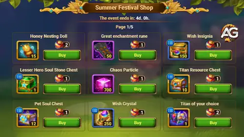
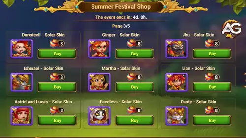

2.300 Energia de Mel, 1 Moeda do Festival de Verão
12.000
2.300 Energia de Mel, 1 Moeda do Festival de Verão
15.000
3.450 Energia de Mel, 1 Moeda do Festival de Verão
20.000
5.750 Energia de Mel, 1 Moeda do Festival de Verão
Fã Surpresa – Missões de Baús da Outland
Abrir baús nas Terras Distantes durante o evento concede grandes quantidades de Energia de Mel, especialmente nos marcos mais altos. Planeje suas tentativas usando aberturas x3 de baús e cargas de portal para alcançar as recompensas finais – incluindo Moedas do Festival de Verão.
Baús da Outland Abertos
Recompensa
3
75 Energia de Mel
6
100 Energia de Mel
10
250 Energia de Mel
15
350 Energia de Mel
20
450 Energia de Mel
25
550 Energia de Mel
35
1.100 Energia de Mel
50
1.650 Energia de Mel
65
1.650 Energia de Mel
85
2.200 Energia de Mel
105
2.200 Energia de Mel, 1 Moeda do Festival de Verão
125
2.200 Energia de Mel, 1 Moeda do Festival de Verão
150
2.750 Energia de Mel, 1 Moeda do Festival de Verão
1.050 Energia de Mel, 1 Moeda do Festival de Verão
750
1.875 Energia de Mel, 1 Moeda do Festival de Verão
1.000
1.875 Energia de Mel, 1 Moeda do Festival de Verão
Tesouros da Ilha Misteriosa – Missões de Movimentos do Explorador
Gaste Movimentos do Explorador no mapa da Ilha Misteriosa para desbloquear tesouros especiais e ganhe grandes recompensas de Energia de Mel ao longo do caminho. Explore com eficiência e suba na escala para receber um avatar exclusivo!
Movimentos do Explorador Usados
Recompensa
2
660 Energia de Mel
5
990 Energia de Mel
7
990 Energia de Mel
10
1.320 Energia de Mel
15
1.650 Energia de Mel
20
1.650 Energia de Mel
30
1.980 Energia de Mel, Avatar Exclusivo
40
1.980 Energia de Mel
50
1.980 Energia de Mel
75
2.640 Energia de Mel
Fervor – Missões de Conclusão de Tarefas do Festival de Verão
Cada colmeia aberta tem chance de soltar Moedas do Festival de Verão, a principal moeda para adquirir itens exclusivos incluindo as Skins Solares. Lembre-se de gastar suas moedas antes do fim do evento, pois elas não permanecerão no seu inventário!
Não se esqueça: recursos não utilizados como Energia de Mel e Moedas do Festival serão convertidos em Baús de Mel assim que o evento terminar. Eles contêm recompensas aleatórias, incluindo avatares, molduras e muito mais.
Loja do Festival de Verão

Loja do Festival de Verão, Tela 01 - Hero Wars Dominion Era. Loja do Festival de Verão, Tela 02 - Hero Wars Dominion Era.

Loja do Festival de Verão, Tela 03 - Hero Wars Dominion Era. Loja do Festival de Verão, Tela 04 - Hero Wars Dominion Era.
Você gostou do nosso Guia de Evento de Verão para Hero Wars Web e Facebook? Há algo que não entendeu ou gostaria de sugerir mudanças? Convidamos você a se juntar à nossa sessão de comentários na página do Alexandre Games Blog. Não hesite em expressar sua opinião, clarificar suas dúvidas e compartilhar sua sugestões. Clique no botão abaixo para começar:


 Calendário do Hero Wars: Dominion Era
Calendário do Hero Wars: Dominion Era Hero Wars Dominion Era: Guias de Personagem - Domine com Cada Herói
Hero Wars Dominion Era: Guias de Personagem - Domine com Cada Herói
 Guia Completo de Mascotes do Hero Wars: Dominion Era
Guia Completo de Mascotes do Hero Wars: Dominion Era
 Lista de Tier dos Heróis 2025 - Hero Wars: Dominion Era
Lista de Tier dos Heróis 2025 - Hero Wars: Dominion Era